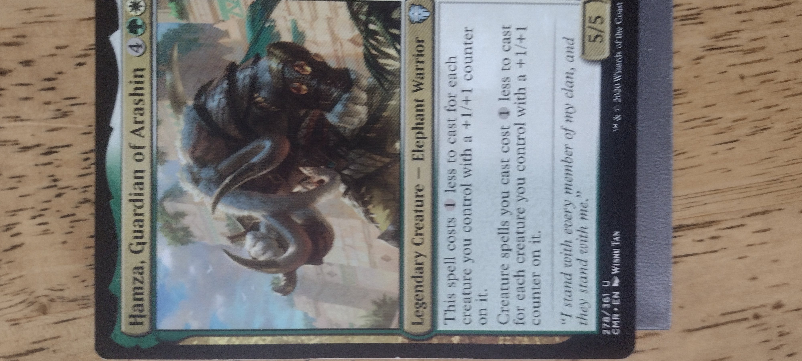
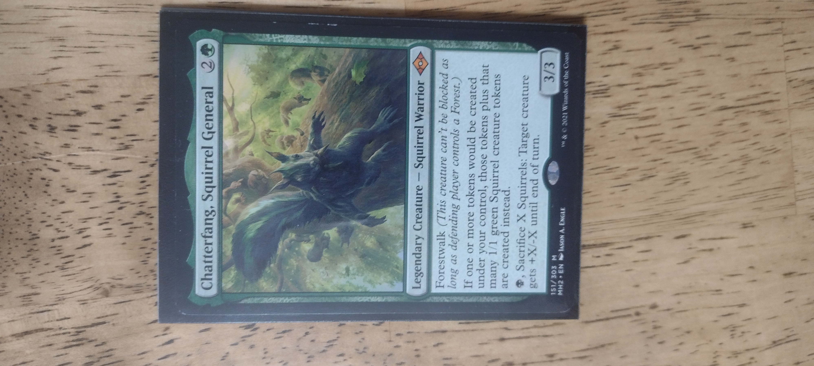
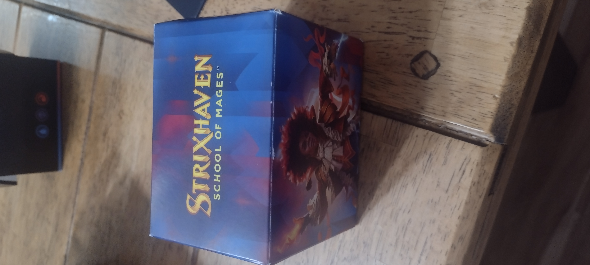
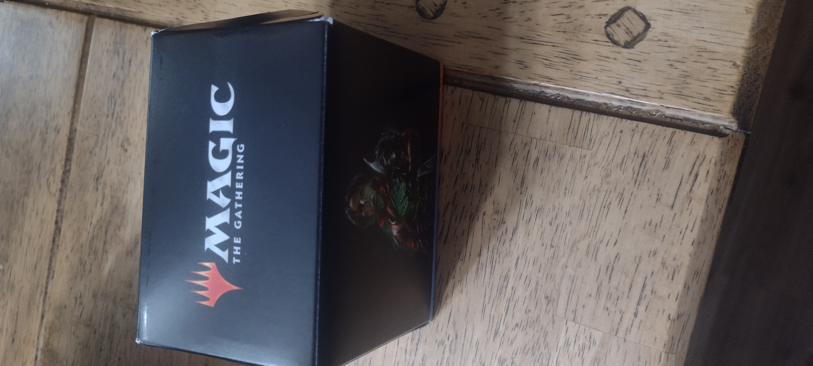

About Me
Hello, I am a junior in highschool (at the time of making this website) and created this website for my Fundementals of Web Design Class. I love to play Magic: The Gathering and started in 2020. I play Magic: The Gathering Areana for Standard and Historic gameplay and play the Commander format on paper. I have 4 commander decks built. Here is a description of each of them.
Hamza +1/+1 Counters
One of them is a green/white deck with Hamza, Guardian of Arashin as the commander. It's goal is to put +1/+1 counters on several cheap creatures in order to make my commander cheaper to cast. Once my commander is in play, my creatures become much cheaper to cast, allowing me to play several powerful creatures for a fraction of the cost. This was the first deck I ever built on paper.
Chatterfang Sacrifice
In my opinion, the most powerful deck I own is my Chatterfang, Squirrel deck. It is a black-green deck that aims to create a bunch of tonkens and then sacrifice them for value. It is so powerful because it swarms the battlefield very quickly, interacts with my opponents well, and can easily take out my opponents with cards that drain my opponents' life whenever a crature I control dies. This is my favorite deck to play.
Prismari Performance Precon
I also own a couple of preconstructed decks that I bought. One such is the "Prismari Performance" preconstructed deck from the strixhaven Commander set. I changed several cards around to make it more focused on the alternate commander, Veyran, Voice of Duality. This deck likes to slowly build up resources, then pop off in one explosive turn.
Mishra's Iron Alliance Precon
The most rescent deck I obtained is the deck called "Mishra's Iron Alliance. The deck is a blue, black, and red deck that cares about casting and sacrificing artifact spells and gaining value off of those cards entering and leaving play. This is a blast of a deck to play, and I think it is one of the more powerful preconstructed decks outthere. It is helmed by the Commander Mishra, Eminent One, who provides a lot of value withs its ability to create a copy of any non-creature artifact you control each turn.
